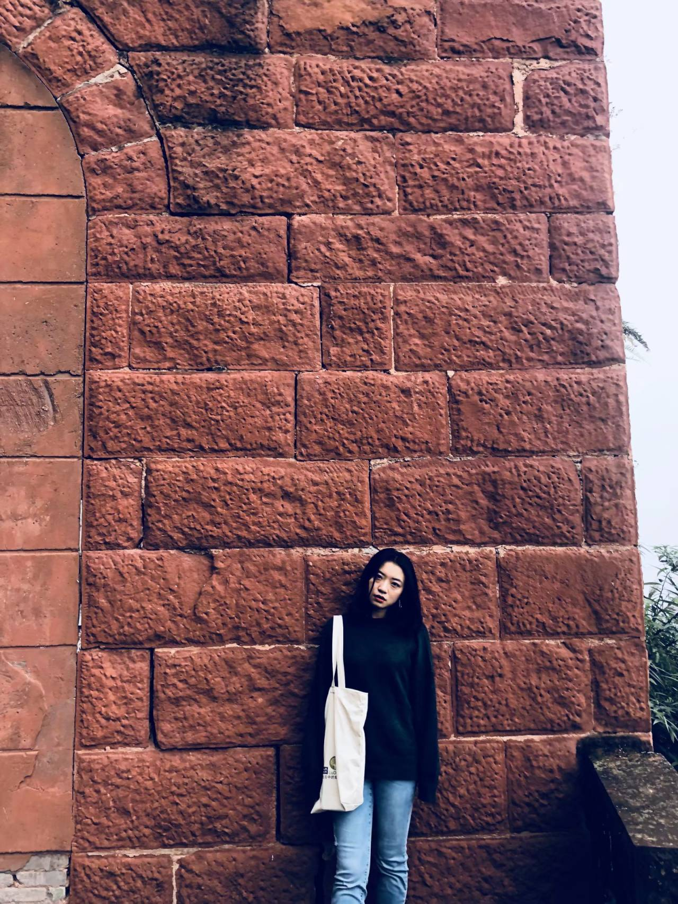
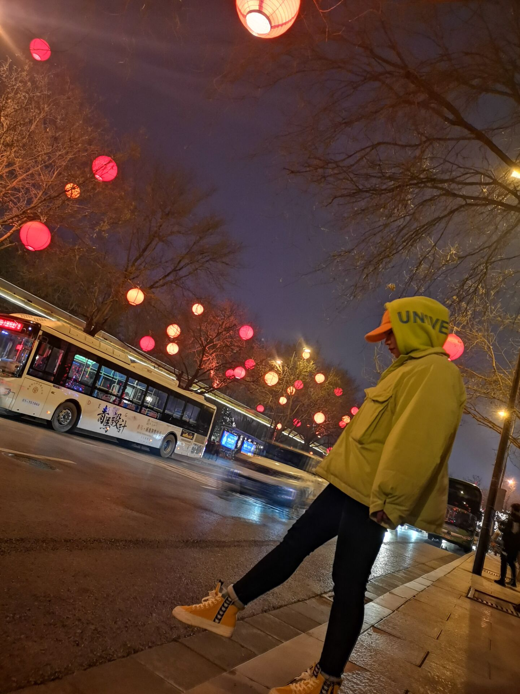
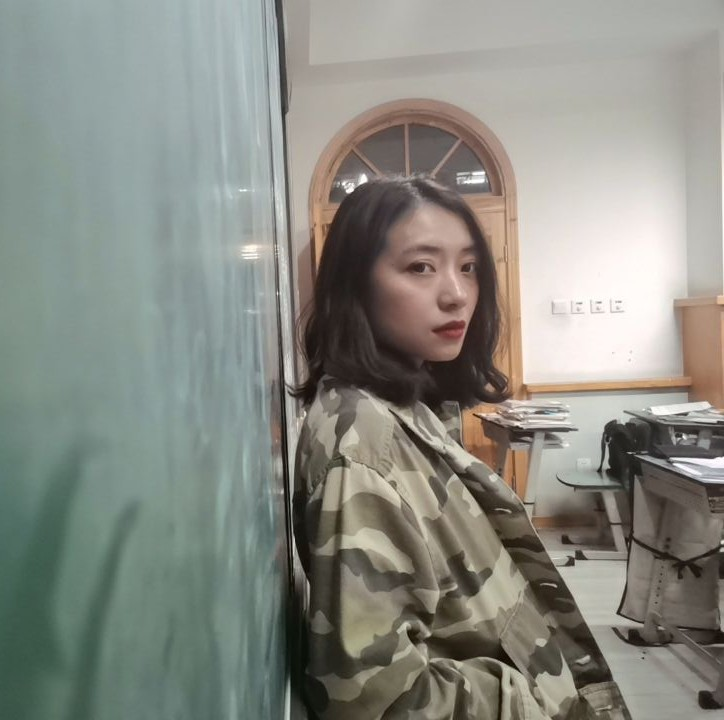
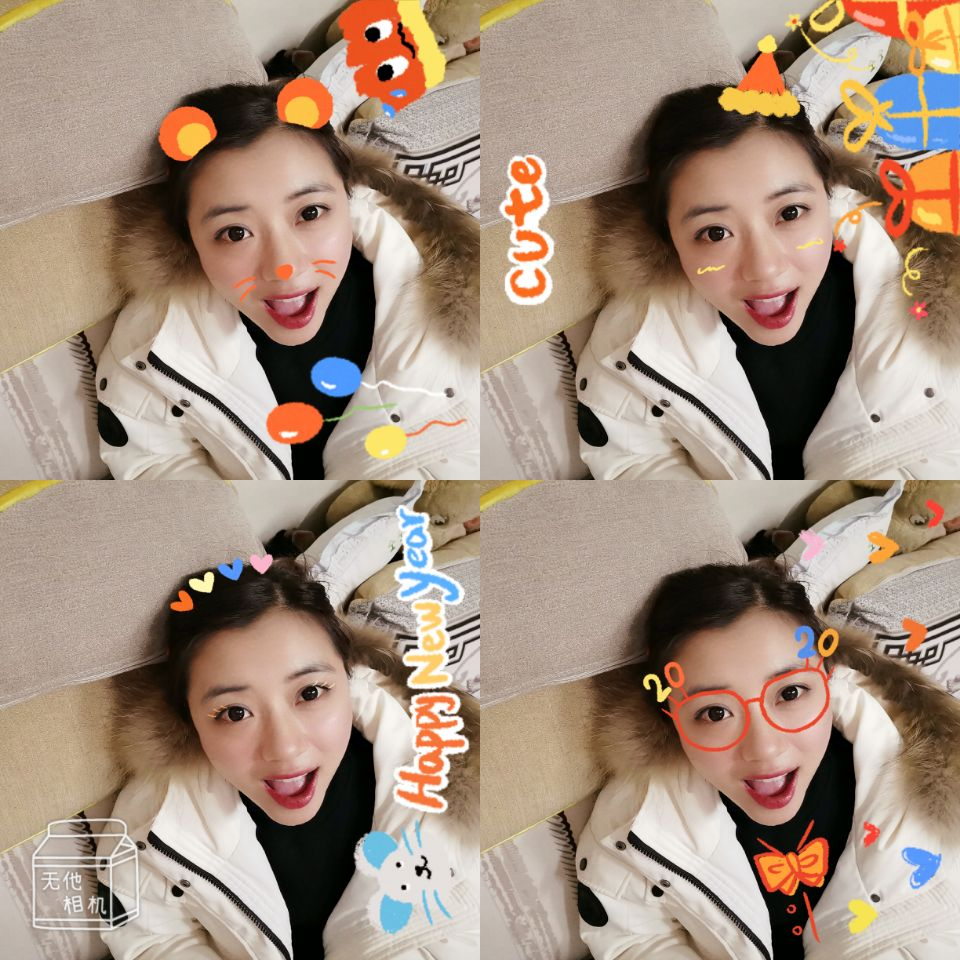
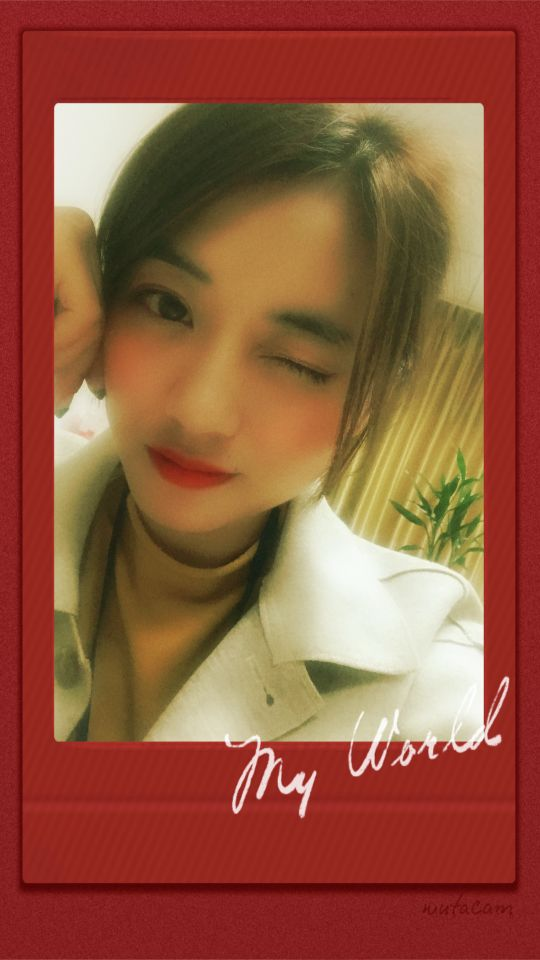
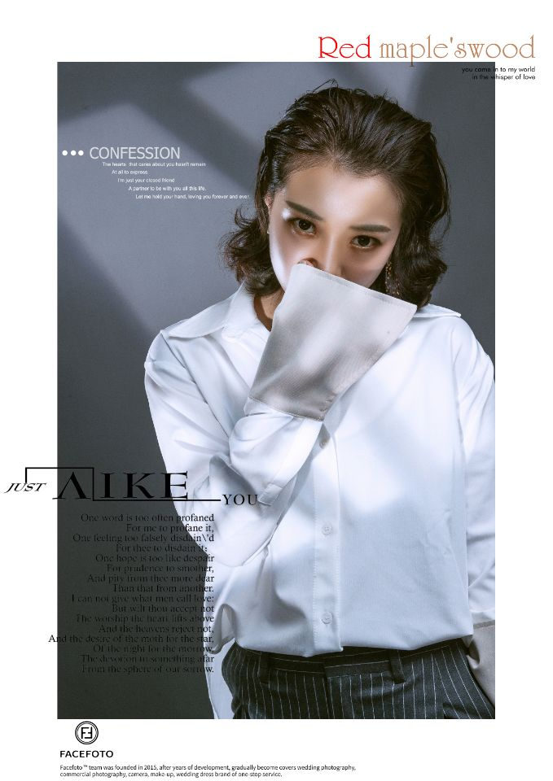

黄子韬的女人，生日快乐。以后的日子里，我们继续一起工作，一起挣钱，下班了你可以去跳跳舞，我可以去跑跑步，空闲时间我再做几个小菜，喝两杯小酒，吃完饭一起窝在沙发里，你打打游戏，我追追剧，继续我们简单而又平凡的生活，爱你哟。
-— 秋
Don’t worry , I’m here till the end of time.
-— Xly
任虹，生日快乐！一晃五年了，这是我们给你过的第五个生日，感谢一路有你，祝你一夜暴富，活成自己想要的样子永远爱你！
-— Peter
生日快乐！永远美丽，永远可爱，永远爱你，陪你度过一年又一年。
-— 晓霖

因为你十八岁了，正值青春，或许自己会想需不需要找一个踏实的生活，但我永远相信你相信你的青春不会结束，请任你心中的彩虹一直绚烂一直拥有无限光芒
-— 邹婧怡

世界上有那么多人，我很幸运在那么多人分之一的概率中成为你的学生。师生情已系，日后君为父。此生得相遇，人离心相依。任老师，生日快乐! (^ O ^)
-— 王霭语

成功源自您的栽培，优秀出自您的耕耘；为今天喝彩的同时，我永远铭记您当初的教诲与引导。祝您桃李满天下，春晖遍四方。生日快乐🎂🎂
-— 徐仕林
亲爱的任妈！又是一年新的生日啦！不知道你还记得你教的第一届学生吗，因为我们快高三了，好多同学都没时间来给你庆祝生日，所以只能用这种形式来表达我们对你的爱！不知道你找到男朋友没呀，我们可是要吃喜糖的呢！虽然初中我很不安分守己，惹你不知道生了多少次气，也让自己挨了多少顿打，但是现在超级怀念啊！如果可以还想做你的学生，还想重新读一次初中！我们爱你！祝你永远开心！永远18岁！ ！对了 记得找爸爸！生日快乐🎂🎂🎂🎊🎊🎉！
-— 让你不省心的袁一为
祝任虹生日快乐，天天开心
-— 康耿彪

生日快乐，越来越年轻。
-—曹钦荣

距离我们的第一次见面已经过了快五年啦！仍然记得第一次见面时青涩的你和朦胧的我们 两者相遇啦！我们的缘分也展开。 过程中有悲有喜、有恼有爱，虽说很平凡，但感觉有你这一切的平凡、平淡都变了有意义。 你对我们是良师亦是益友，一同成长、一同进步。 亲爱的任虹 生日快乐❤️狗子们永远爱你
-— 三头

我最最亲爱的任🌈，生日快乐哟！这么久没见，真的想死你了！很感谢你在我学习路上的支持和帮助，也感谢你让我有了个难忘的初中记忆，说好了以后挣了钱带你和秋秋去旅游😁。最后希望你每天觉都能睡饱，饭能吃好，开开心心每一天，巨可爱加油鸭！！生日快乐！
-— 徐梦翌